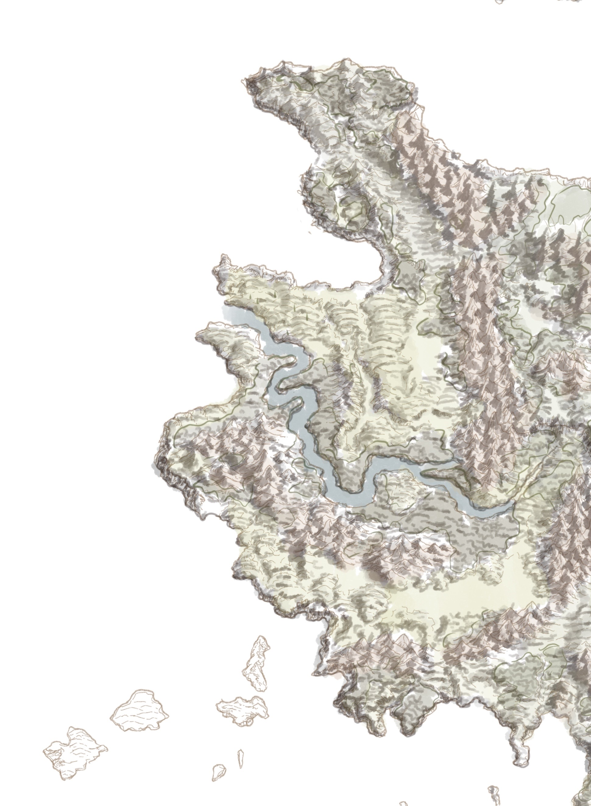

Mount and Blade has always been close to my heart, and it was something that I always wanted to create a map of. For a while there, I was really going at it creating a full fledged map of the entire world, but this semester there was an assignmnet for map-making (what are the odds of that??), and I had to put something out relatively quickly. My workflow is generally a bit slow, especially when trying to be accurate to the material. So I honed in on a particular kingdom in the world, and here we have this small piece of the world map! The full world map is still something on my to-do list, but as of now it is on pause due to my addiction to Kenshi.

The Sketch
I have to say that I was in a bit of a rush for this map. I have a tendency to not finish my projects due to how long they take, but since I did it for an assignment, I HAD to have it done within a certain amount of time. I think that really forced my hand, but I was happy with what I was able to put out. I had decided to mess with a style that is similar to the style of map found int Kingdom Come: Deliverance, since both games take on that medieval theme, regardless of if this one is fictional. I liked the aesthetic of the rolling hills and the patterns of forests. If I had had more time, I would have loved to do a nice medieval border to match the rest of the map!

The Rough Draft
The initial draft was a bit difficult, as I was already working on the whole world map as a personal project, but realized I had to focus in on a certain kingdom to be able to make the assignment in time. Vlandia was the easiest kingdom to choose, since it sits on the coast of Calradia.
Sometimes I have a hard time sketching my designs first before fully committing, so with this rough draft I was trying to do it a bit differently by segmenting off the different biomes in the kingdom. I actually ended up liking this method of breaking apart the drawing, and I may continue to do this moving forward!
Final Thoughts
I'm happy with how this turned out, but I will admit that it was difficult to do in such a short amount of time. I am still planning on doing the entire world map, but ,like most of my projects, I'll get around to it eventually!